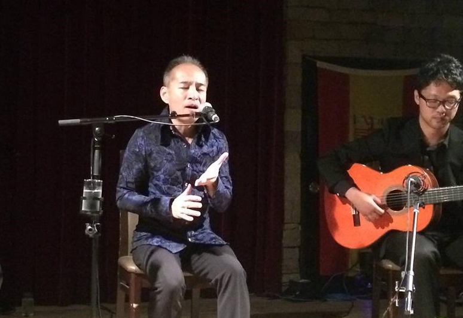

山川雅広(やまかわ まさひろ)
アンヘリートの名前で、フラメンコ歌手として活動中
高松高校 昭和54年卒
(Last updated:2016.3)

プロフィール
1984年大阪大学基礎工学部情報工学科卒業
1984年～2005年博報堂入社。テレビ局、営業局で活躍後、退社。
2006年 フラメンコ歌手を目指して、スペイン・セビリアへ。
2006年～2008年Fundacion Cristina Heerenでカンテ（歌）修行。その後、Esperanza FernandezやEl Lebrijanoに師事。
2009年より、Carmen Ledesma，Miguel Vargasのスタジオにてバイレ（踊り）伴唱の他セビージャを中心に、アンダルシア各地にて数多くのライブに出演。
2015年夏、帰国。現在東京都内のライブハウスを中心に活動中。
山川さんのfacebookはこちら。